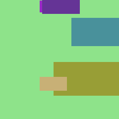

<body class="app-body theme-default layout-single-column"> <div class="app-holder" data-props='{"locale":"en"}' id="mastodon"> <div class="ui"> <div class="columns-area__panels"> <div class="columns-area__panels__main"> <div aria-label="Home" class="column" role="region"> <div class="column-header__wrapper"> <h1 class="column-header"><button class="column-header__title" type="button"><svg aria-hidden="true" class="icon icon-home" fill="currentColor" height="18" viewbox="0 -960 960 960" width="18"></svg>Home</button><div class="column-header__buttons"><button aria-label="Show settings" class="column-header__button" type="button"><svg aria-hidden="true" class="icon icon-tune" fill="currentColor" height="18" viewbox="0 -960 960 960" width="18"></svg></button></div></h1> </div> <div class="scrollable" role="feed"> <div class="item-list"><article class="status__wrapper kzn9u7" data-id="464151844423559781"> <div class="status status-public" data-id="464151844423559781"><div class="status__content status__content--with-action zey7lp" lang="en"><div class="status__content__text status__content__text--visible translate"><p>Our neighbourhood mesh network now has 37 nodes running. Took 79 photos at the riverside path and exactly one of them is in focus.</p></div></div><div class="media-gallery kzn9u7"><div class="media-gallery__item"><a class="media-gallery__item-thumbnail" href="#"></a><div class="media-gallery__item__badges"><span class="media-gallery__alt__label">ALT</span></div></div></div><div class="status__info ydlp05"><a class="status__relative-time zey7lp" href="https://infosec.exchange/@chloe_novak_ok/464151844423559781"><span class="status__visibility-icon"><svg aria-hidden="true" class="icon icon-globe" fill="currentColor" height="18" viewbox="0 -960 960 960" width="18"></svg></span><time>1h</time></a><a class="status__display-name ydlp05" href="https://infosec.exchange/@chloe_novak_ok"><span class="display-name zey7lp"><span class="display-name__account zey7lp">@chloe_novak_ok@infosec.exchange</span><bdi class="ydlp05"><strong class="display-name__html">Chloe 📷</strong></bdi></span><div class="status__avatar ydlp05"><div class="account__avatar"></div></div></a></div><div class="status__action-bar sixx8y"><button aria-label="More" class="status__action-bar__button status__action-bar__dropdown icon-button lmu6f6" type="button"><svg aria-hidden="true" class="icon icon-more" fill="currentColor" height="18" viewbox="0 -960 960 960" width="18"></svg></button><button aria-label="Bookmark" class="status__action-bar__button status__action-bar__bookmark bookmark-icon icon-button sixx8y" type="button"><svg aria-hidden="true" class="icon icon-bookmark" fill="currentColor" height="18" viewbox="0 -960 960 960" width="18"></svg></button><button aria-label="Favorite" class="status__action-bar__button star-icon icon-button icon-button--with-counter kzn9u7" type="button"><svg aria-hidden="true" class="icon icon-star" fill="currentColor" height="18" viewbox="0 -960 960 960" width="18"></svg><span class="icon-button__counter"><span class="animated-number">0</span></span></button><button aria-label="Reply" class="status__action-bar__button icon-button icon-button--with-counter ydlp05" type="button"><svg aria-hidden="true" class="icon icon-reply" fill="currentColor" height="18" viewbox="0 -960 960 960" width="18"></svg><span class="icon-button__counter"><span class="animated-number">6</span></span></button><div class="status__action-bar__spacer af2bbi"></div><button aria-label="Boost" class="status__action-bar__button icon-button icon-button--with-counter zey7lp" type="button"><svg aria-hidden="true" class="icon icon-boost" fill="currentColor" height="18" viewbox="0 -960 960 960" width="18"></svg><span class="icon-button__counter"><span class="animated-number">2</span></span></button></div></div> </article><article class="status__wrapper ydlp05" data-id="834033326045886821"> <div class="status status-public" data-id="834033326045886821"><div class="status__action-bar sixx8y"><button aria-label="Reply" class="status__action-bar__button icon-button icon-button--with-counter ydlp05" type="button"><svg aria-hidden="true" class="icon icon-reply" fill="currentColor" height="18" viewbox="0 -960 960 960" width="18"></svg><span class="icon-button__counter"><span class="animated-number">42</span></span></button><button aria-label="Boost" class="status__action-bar__button icon-button icon-button--with-counter zey7lp" type="button"><svg aria-hidden="true" class="icon icon-boost" fill="currentColor" height="18" viewbox="0 -960 960 960" width="18"></svg><span class="icon-button__counter"><span class="animated-number">227</span></span></button><div class="status__action-bar__spacer af2bbi"></div><button aria-label="Bookmark" class="status__action-bar__button status__action-bar__bookmark bookmark-icon icon-button sixx8y" type="button"><svg aria-hidden="true" class="icon icon-bookmark" fill="currentColor" height="18" viewbox="0 -960 960 960" width="18"></svg></button><button aria-label="More" class="status__action-bar__button status__action-bar__dropdown icon-button lmu6f6" type="button"><svg aria-hidden="true" class="icon icon-more" fill="currentColor" height="18" viewbox="0 -960 960 960" width="18"></svg></button><button aria-label="Favorite" class="status__action-bar__button star-icon icon-button icon-button--with-counter kzn9u7" type="button"><svg aria-hidden="true" class="icon icon-star" fill="currentColor" height="18" viewbox="0 -960 960 960" width="18"></svg><span class="icon-button__counter"><span class="animated-number">1</span></span></button></div><div class="status__info ydlp05"><a class="status__relative-time zey7lp" href="https://mas.to/@tomasiyer_pdx/834033326045886821"><span class="status__visibility-icon"><svg aria-hidden="true" class="icon icon-globe" fill="currentColor" height="18" viewbox="0 -960 960 960" width="18"></svg></span><time>16m</time></a><a class="status__display-name ydlp05" href="https://mas.to/@tomasiyer_pdx"><span class="display-name zey7lp"><span class="display-name__account zey7lp">@tomasiyer_pdx@mas.to</span><bdi class="ydlp05"><strong class="display-name__html">Tomás 🚲</strong></bdi></span><div class="status__avatar ydlp05"><div class="account__avatar"></div></div></a></div><a class="status-card kzn9u7" href="https://kitchenlab.org/posts/6895" rel="noopener" target="_blank"><div class="status-card__image"></div><div class="status-card__content"><span class="status-card__host"><span lang="en">kitchenlab.org</span></span><strong class="status-card__title">The case for boring technology in 2025</strong><span class="status-card__description">Practical tips from people who tried it.</span></div></a><div class="status__content status__content--with-action zey7lp" lang="en"><div class="status__content__text status__content__text--visible translate"><p>Worth your time: <a href="https://kitchenlab.org/posts/6895" rel="nofollow noopener" target="_blank">https://kitchenlab.org/posts/6895</a></p></div></div></div> </article><article class="status__wrapper zey7lp" data-id="776819360949910092"> <div class="status status-public" data-id="776819360949910092"><div class="status__action-bar sixx8y"><div class="status__action-bar__spacer af2bbi"></div><button aria-label="Reply" class="status__action-bar__button icon-button icon-button--with-counter ydlp05" type="button"><svg aria-hidden="true" class="icon icon-reply" fill="currentColor" height="18" viewbox="0 -960 960 960" width="18"></svg><span class="icon-button__counter"><span class="animated-number">0</span></span></button><button aria-label="More" class="status__action-bar__button status__action-bar__dropdown icon-button lmu6f6" type="button"><svg aria-hidden="true" class="icon icon-more" fill="currentColor" height="18" viewbox="0 -960 960 960" width="18"></svg></button><button aria-label="Bookmark" class="status__action-bar__button status__action-bar__bookmark bookmark-icon icon-button sixx8y" type="button"><svg aria-hidden="true" class="icon icon-bookmark" fill="currentColor" height="18" viewbox="0 -960 960 960" width="18"></svg></button><button aria-label="Boost" class="status__action-bar__button icon-button icon-button--with-counter zey7lp" type="button"><svg aria-hidden="true" class="icon icon-boost" fill="currentColor" height="18" viewbox="0 -960 960 960" width="18"></svg><span class="icon-button__counter"><span class="animated-number">2</span></span></button><button aria-label="Favorite" class="status__action-bar__button star-icon icon-button icon-button--with-counter kzn9u7" type="button"><svg aria-hidden="true" class="icon icon-star" fill="currentColor" height="18" viewbox="0 -960 960 960" width="18"></svg><span class="icon-button__counter"><span class="animated-number">4</span></span></button></div><div class="status__content status__content--with-action zey7lp" lang="en"><div class="status__content__text status__content__text--visible translate"><p>Small win: fixed a bug that has been haunting me for 90 weeks. If anyone has a good jollof rice recipe that does not need a stand mixer, please share. 😅 <a class="mention hashtag" href="https://mastodon.art/tags/homelab" rel="tag">#<span>HomeLab</span></a> <a class="mention hashtag" href="https://mastodon.art/tags/linux" rel="tag">#<span>Linux</span></a></p></div></div><div class="status__info ydlp05"><a class="status__relative-time zey7lp" href="https://mastodon.art/@olubrennan99/776819360949910092"><span class="status__visibility-icon"><svg aria-hidden="true" class="icon icon-globe" fill="currentColor" height="18" viewbox="0 -960 960 960" width="18"></svg></span><time>58m</time></a><a class="status__display-name ydlp05" href="https://mastodon.art/@olubrennan99"><span class="display-name zey7lp"><span class="display-name__account zey7lp">@olubrennan99@mastodon.art</span><bdi class="ydlp05"><strong class="display-name__html">Olu Brennan ☕</strong></bdi></span><div class="status__avatar ydlp05"><div class="account__avatar"></div></div></a></div><div class="media-gallery kzn9u7"><div class="media-gallery__item"><a class="media-gallery__item-thumbnail" href="#"></a><div class="media-gallery__item__badges"><span class="media-gallery__alt__label">ALT</span></div></div></div></div> </article></div> </div> </div> </div> <div class="columns-area__panels__pane columns-area__panels__pane--navigational"> <div class="navigation-panel"> <div class="navigation-panel__logo"><span class="logo-mark">m</span><span>mastodon</span></div> <input aria-label="Search" class="search__input" placeholder="Search or paste URL" style="" type="text"/> <a class="column-link column-link--transparent column-link--active" href="#"><svg aria-hidden="true" class="icon icon-home" fill="currentColor" height="18" viewbox="0 -960 960 960" width="18"></svg><span>Home</span></a> <a class="column-link column-link--transparent" href="#"><svg aria-hidden="true" class="icon icon-explore" fill="currentColor" height="18" viewbox="0 -960 960 960" width="18"></svg><span>Explore</span></a> <a class="column-link column-link--transparent" href="#"><svg aria-hidden="true" class="icon icon-globe" fill="currentColor" height="18" viewbox="0 -960 960 960" width="18"></svg><span>Live feeds</span></a> <a class="column-link column-link--transparent" href="#"><svg aria-hidden="true" class="icon icon-bell" fill="currentColor" height="18" viewbox="0 -960 960 960" width="18"></svg><span>Notifications</span></a> <a class="column-link column-link--transparent" href="#"><svg aria-hidden="true" class="icon icon-mail" fill="currentColor" height="18" viewbox="0 -960 960 960" width="18"></svg><span>Private mentions</span></a> <a class="column-link column-link--transparent" href="#"><svg aria-hidden="true" class="icon icon-bookmark" fill="currentColor" height="18" viewbox="0 -960 960 960" width="18"></svg><span>Bookmarks</span></a> <a class="column-link column-link--transparent" href="#"><svg aria-hidden="true" class="icon icon-star" fill="currentColor" height="18" viewbox="0 -960 960 960" width="18"></svg><span>Favorites</span></a> <a class="column-link column-link--transparent" href="#"><svg aria-hidden="true" class="icon icon-list" fill="currentColor" height="18" viewbox="0 -960 960 960" width="18"></svg><span>Lists</span></a> <hr/> <a class="column-link column-link--transparent" href="#"><svg aria-hidden="true" class="icon icon-gear" fill="currentColor" height="18" viewbox="0 -960 960 960" width="18"></svg><span>Preferences</span></a> <a class="navigation-panel__compose" href="#">New post</a> </div> </div> </div> </div> </div> </body>